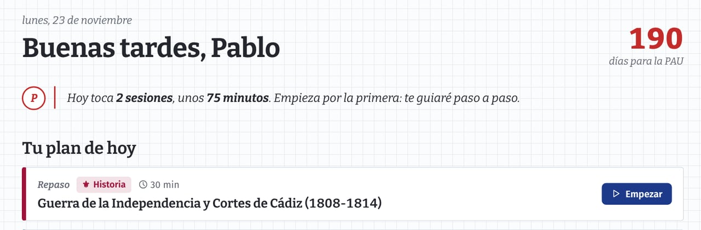
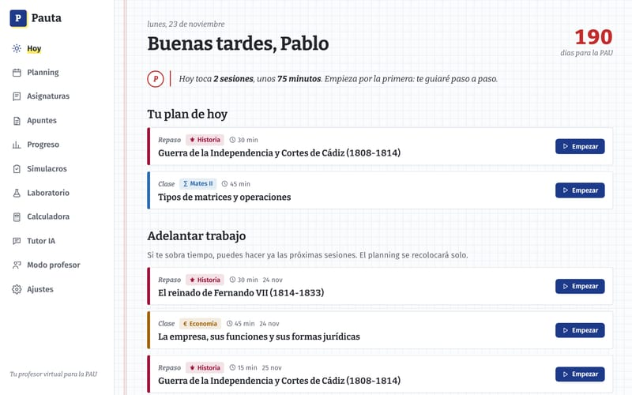
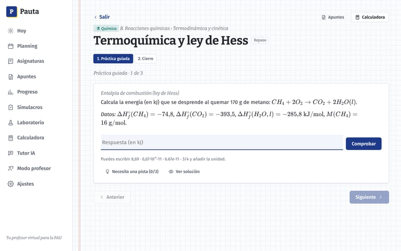
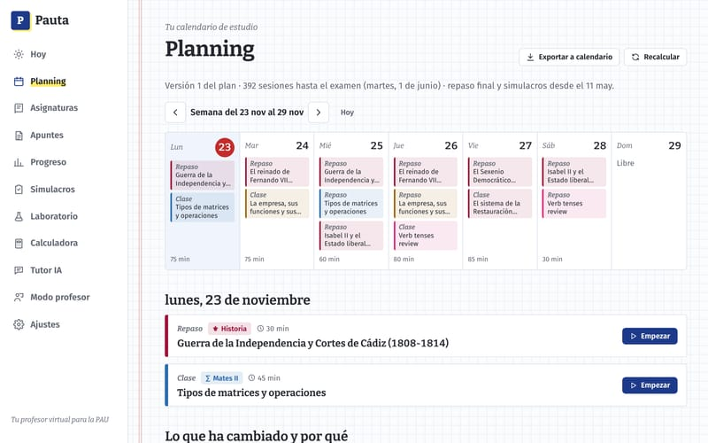
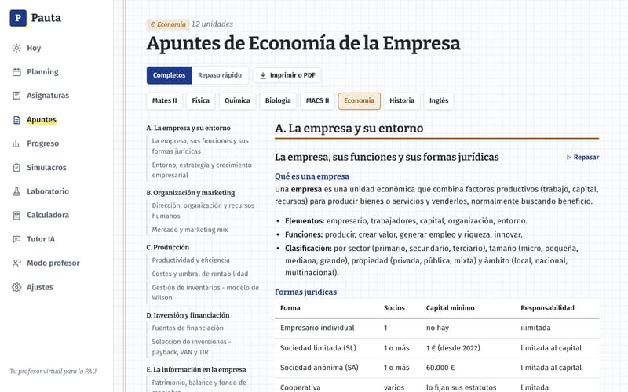
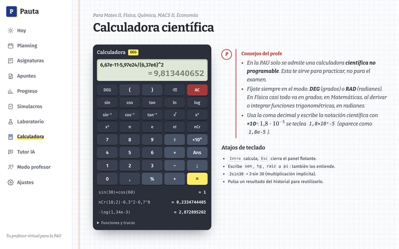
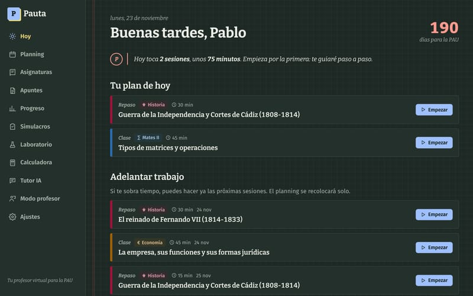

Pauta
Un profesor virtual que organiza tu semana hasta la PAU (la antigua EBAU/selectividad), te da clase cada día y corrige tus ejercicios al momento.A virtual teacher that plans your week up to the Spanish university entrance exam (PAU), teaches you every day and marks your exercises instantly.
- JavaScript
- HTML/CSS
- KaTeX
- PWA
- node:test
- GitHub Actions
- 8 asignaturas8 subjects
- 133 clases133 lessons

Qué esWhat it is
Una aplicación web para preparar la PAU de 2.º de Bachillerato. Le dices qué asignaturas estudias, cuánto tiempo tienes y cuándo es el examen, y te crea un planning semanal que se adapta solo: si un día no estudias, si un tema te cuesta o si vas rápido.A web app to prepare the Spanish university entrance exam. You tell it your subjects, how much time you have and when the exam is, and it builds a weekly plan that adapts by itself: when you skip a day, struggle with a topic or go faster.
Cubre 8 asignaturas con el temario de la Comunitat Valenciana: Matemáticas II, Física, Química, Biología, Matemáticas Aplicadas a las CC. SS. II, Economía de la Empresa, Historia de España e Inglés II. Es mi proyecto más grande y lo uso para enseñar cómo organizo un proyecto completo: tests, documentación, integración continua y despliegue.It covers 8 subjects with the Valencian syllabus: Maths II, Physics, Chemistry, Biology, Maths for Social Sciences II, Business Economics, History of Spain and English II. It is my biggest project and I use it to show how I organise a complete project: tests, documentation, continuous integration and deployment.
Cómo se usaHow to use it
- Cuéntale tu situaciónTell it about youUna conversación de bienvenida: asignaturas, nivel, por dónde vas en clase, días y horas disponibles, fecha del examen y nota objetivo.A welcome conversation: subjects, level, where you are in class, available days and hours, exam date and target grade.
- Sigue el planningFollow the planCada día te dice qué toca: clases nuevas, repasos espaciados, refuerzos y, al final, simulacros. Se puede exportar al calendario.Every day it tells you what to do: new lessons, spaced reviews, reinforcement and, at the end, mock exams. It can be exported to your calendar.
- Haz la clase guiadaTake the guided lessonCalentamiento, explicación, ejemplo paso a paso, práctica con tres pistas, mini test y cierre con «Así cae en la PAU». Con calculadora científica en las asignaturas de ciencias.Warm-up, explanation, step-by-step example, practice with three hints, quiz and a closing tip about how the topic appears in the exam. With a scientific calculator in science subjects.
- Mira tu progresoCheck your progressDominio por asignatura y tema, puntos débiles, racha y notas de los simulacros. Si hace falta, el plan se recoloca y te explica por qué.Mastery per subject and topic, weak points, streak and mock exam grades. When needed, the plan reorganises itself and tells you why.
CapturasScreenshots
El diseño imita el cuaderno del alumno corregido por su profe: papel de cuadrícula, tinta azul, boli rojo y fosforito. El modo oscuro es una pizarra.The design imitates a student notebook marked by the teacher: squared paper, blue ink, red pen and highlighter. Dark mode is a chalkboard.






Cómo está hechoHow it is built
Sin frameworks: JavaScript con módulos nativos, HTML y CSS. La lógica está separada de la interfaz en funciones puras, para poder probarla con tests. El temario no está en el código: son archivos YAML que un validador revisa antes de compilar.No frameworks: JavaScript with native modules, HTML and CSS. The logic is separated from the interface in pure functions so it can be tested. The syllabus is not in the code: it lives in YAML files that a validator checks before building.
Lo más destacadoHighlights
Planning que se adaptaAdaptive plan
Replanifica solo y explica cada cambio, respetando el orden de los temas.Re-plans by itself and explains every change, respecting topic order.
Corrección inteligenteSmart marking
Acepta unidades y notación española, y detecta el error típico (signo, potencia de 10, olvidar un cuadrado).Accepts units and Spanish notation, and spots typical mistakes (sign, power of 10, a missing square).
Calculadora sin evalCalculator without eval
Analizador sintáctico propio de descenso recursivo: solo entiende matemáticas, no ejecuta código.My own recursive-descent parser: it only understands maths and never runs code.
Funciona sin internetWorks offline
PWA instalable y un único archivo HTML con todo dentro.Installable PWA and a single HTML file with everything inside.
PrivacidadPrivacy
Sin cuentas ni servidor: los datos se quedan en el navegador.No accounts or server: data stays in the browser.
AccesibleAccessible
Navegable con teclado, foco visible, modo oscuro y diseño para móvil.Keyboard navigable, visible focus, dark mode and mobile layout.
EnlacesLinks
La web del proyecto tiene más capturas, la ficha técnica y preguntas frecuentes. En el repositorio están la documentación de la arquitectura y las decisiones de diseño.The project website has more screenshots, the tech sheet and an FAQ. The repository includes the architecture docs and design decisions.